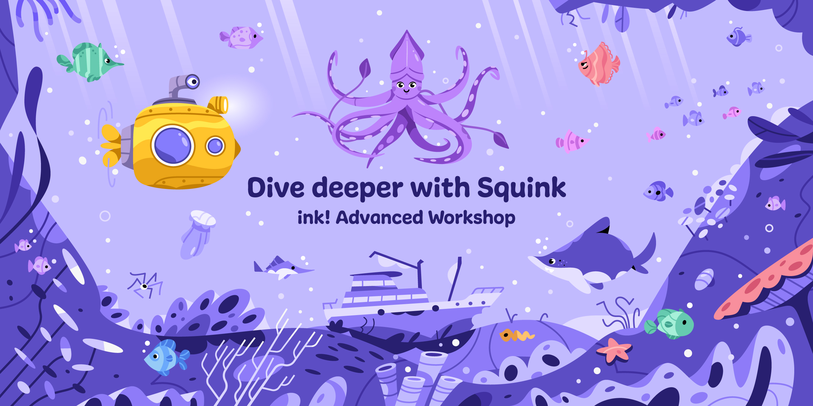

<!DOCTYPE html>
<html lang="en">

<head>
  <meta charset="utf-8" />
  <meta name="viewport" content="width=device-width, initial-scale=1.0, maximum-scale=1.0, user-scalable=no" />

  <title>ink! Workshop (Second Day)</title>
  <link rel="shortcut icon" href="./../../assets/favicon.ico" />
  <link rel="stylesheet" href="./../../dist/reset.css" />
  <link rel="stylesheet" href="./../../dist/reveal.css" />
  <link rel="stylesheet" href="./../../assets/styles/PBA-theme.css" id="theme" />
  <link rel="stylesheet" href="./../../css/highlight/shades-of-purple.css" />

  <link rel="stylesheet" href="./../.././assets/styles/custom-classes.css" />

</head>

<body class="site">
  <header class="site-header">
    <!-- This logo is a link only on the watching server, not the production build -->
      
  </header>
  <main class="reveal">
    <article class="slides">
      <section  data-markdown><script type="text/template">


</script></section><section  data-markdown><script type="text/template">
<pba-cols>
<pba-col center>

### Now

We help you debug!

</pba-col>
<pba-col center>

### Then

🕹️🎮🕹️🎮

</pba-col>
<pba-col center>

### Thereafter

Solutions Explainer

</pba-col>
</pba-cols>

<br/>

<blockquote style="text-align: left; font-size: 0.9em;">
Use as little gas as possible to paint as many fields as possible.<br/><br/>
Stay within your gas budget.<br/><br/>
The later you manage to still paint a field, the better you score.<br/><br/>
No overpainting! First player to paint a field owns it.<br/>
</blockquote>

<br/>
<br/>

[paritytech/squink-splash-advanced](https://github.com/paritytech/squink-splash-advanced)
</script></section><section  data-markdown><script type="text/template">
## Frontend

[https://splash.use.ink](https://splash.use.ink)
</script></section><section  data-markdown><script type="text/template">
## Questions

- What strategy did the winner choose?

<!-- .element: class="fragment" -->

- What strategies did the others choose?

<!-- .element: class="fragment" -->

- What do you think would be the perfect strategy?

<!-- .element: class="fragment" -->
</script></section><section  data-markdown><script type="text/template">
## Board Dimensions

- Worst 😱
  - Cross-contract call to `game`<br/><br/>
```rust
#[ink(message)]
pub fn dimensions(&self) -> (u32, u32)
```
<br/><br/>

<!-- .element: class="fragment" -->

- Best 👍️
  - `const width: u32`
  - `new(width: u32, height: u32)`

<!-- .element: class="fragment" -->
</script></section><section  data-markdown><script type="text/template">
## More Pitfalls


- Forgetting `--release`

<!-- .element: class="fragment" -->

- Iterating over a datastructure in your contract

<!-- .element: class="fragment" -->
</script></section><section  data-markdown><script type="text/template">
## Avoid iteration

<pba-cols>
<pba-col center>

```
#[ink(message)]
fn pay_winner()
  let winner = self.players.find(…);

  self.transfer(winner, …);
}
```
</pba-col>
<!-- .element: class="fragment" -->
<pba-col center>

```rust
#[ink(message)]
fn pay_winner(
    winner: AccountId
) {
  assert!(is_winner(winner));

  self.transfer(winner, …);
}
```

</pba-col>
<!-- .element: class="fragment" -->
</pba-cols></script></section><section  data-markdown><script type="text/template">
## Strategy 1<br/>Return Random Numbers


</script></section><section  data-markdown><script type="text/template">
## Strategy 1<br/>Return Random Number

- Wasm-compatible RNG
<!-- .element: class="fragment" -->
- Use Storage to hold seed for random number
<!-- .element: class="fragment" -->
- 📈 Uses little Gas
<!-- .element: class="fragment" -->
- 📉 Quickly runs into collisions
<!-- .element: class="fragment" -->
- 📉 Score function rewards players that late in game still paint fields
<!-- .element: class="fragment" -->
</script></section><section  data-markdown><script type="text/template">
## Strategy 2<br/>Paint only free fields


</script></section><section  data-markdown><script type="text/template">
## Strategy 2<br/>Paint only free fields

- Query board for free fields
- 📈 Succeeds late in game

<!-- .element: class="fragment" -->

- 📉 Cross-contract call 💰️
- 📉 Need to iterate over `Mapping`: `O(n)`

<!-- .element: class="fragment" -->
</script></section><section  data-markdown><script type="text/template">
## Strategy 3<br/>Shift computation off-chain


</script></section><section  data-markdown><script type="text/template">
## Strategy 3<br/>Shift computation off-chain

- Off-chain Script
  - Query board ➜ Search free field<br/><br/>

<!-- .element: class="fragment" -->

- ```rust[1-2|1-7]
  #[ink(message)]
  fn set_next_turn(turn: …) {}

  #[ink(message, selector = 0)]
  pub fn your_turn(&mut self) -> {
    self.next_turn
  }
  ```

<!-- .element: class="fragment"  -->
</script></section><section  data-markdown><script type="text/template">
## Strategy 4<br/>Exploit player sorting in game loop


</script></section><section  data-markdown><script type="text/template">
## Strategy 4<br/>Exploit player sorting in game loop

- On top of Strategy 3 (off-chain computation).
<!-- .element: class="fragment"  -->

- Game loop calls players in same order each time.
<!-- .element: class="fragment"  -->

```rust
#[ink(message)]
fn submit_turn(&mut self) {
    // -- snip --

    for (idx, player) in players.iter_mut().enumerate() {
        …
    }

  // -- snip --
}
```

<!-- .element: class="fragment"  -->
</script></section><section  data-markdown><script type="text/template">
## Strategy 4<br/>Exploit player sorting in game loop

```rust
impl<T: Config> AddressGenerator<T> for DefaultAddressGenerator {
	fn generate_address(
		deploying_address: &T::AccountId,
		code_hash: &CodeHash<T>,
		input_data: &[u8],
		salt: &[u8],
	) -> T::AccountId {

    // -- snip --

	}
}
```

➜ All inputs are known
<!-- .element: class="fragment"  -->

➜ Generate low `T::AccountId` with known inputs
<!-- .element: class="fragment"  -->
</script></section><section  data-markdown><script type="text/template">
## Strategy 5<br/>Checking these slides already yesterday


</script></section><section  data-markdown><script type="text/template">
<!-- .slide: data-background="../../assets/img/6-FRAME/6.5-Smart_Contracts/ink/Questions_2.svg"" -->
</script></section>
    </article>
  </main>

  <script src="./../../dist/reveal.js"></script>

  <script src="./../../plugin/markdown/markdown.js"></script>
  <script src="./../../plugin/highlight/highlight.js"></script>
  <script src="./../../plugin/zoom/zoom.js"></script>
  <script src="./../../plugin/notes/notes.js"></script>
  <script src="./../../plugin/math/math.js"></script>
  <script>
    function extend() {
      var target = {};
      for (var i = 0; i < arguments.length; i++) {
        var source = arguments[i];
        for (var key in source) {
          if (source.hasOwnProperty(key)) {
            target[key] = source[key];
          }
        }
      }
      return target;
    }

    // default options to init reveal.js
    var defaultOptions = {
      controls: true,
      progress: true,
      history: true,
      center: true,
      transition: 'default', // none/fade/slide/convex/concave/zoom
      slideNumber: true,
      plugins: [
        RevealMarkdown,
        RevealHighlight,
        RevealZoom,
        RevealNotes,
        RevealMath
      ]
    };

    // options from URL query string
    var queryOptions = Reveal().getQueryHash() || {};

    var options = extend(defaultOptions, {"width":1400,"height":900,"margin":0,"minScale":0.2,"maxScale":2,"transition":"none","controls":true,"progress":true,"center":true,"slideNumber":true,"backgroundTransition":"fade"}, queryOptions);
  </script>


  <script>
    Reveal.initialize(options);
  </script>
</body>

</html>
